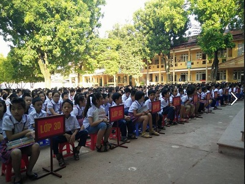
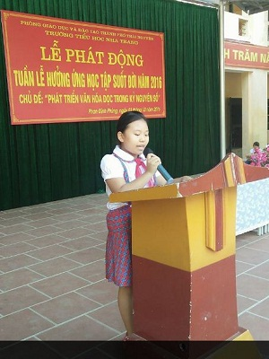

Trường Tiểu học Nha Trang hưởng ứng Tuần lễ học tập suốt đời năm 2016 Chủ đề: “Phát triển văn hóa đọc trong kỷ nguyên số”
Thư viện trường học là nơi thu hút các em học sinh tìm đến đọc sách sau những giờ học tập căng thẳng. Thư viện trường học góp phần tạo ra một môi trường học tập tích cực cho học sinh, tại đây học sinh có cơ hội tham gia tìm kiếm, khám phá thông tin, hình thành kiến thức mới để phục vụ bài học, làm giàu kiến thức cho bản thân. Với mỗi thầy cô giáo đến thư viện sẽ được sử dụng các nguồn tài liệu tham khảo vô cùng phong phú để cập nhật thông tin và hoàn thiện kiến thức. Với các nguồn tài liệu sẵn có trong thư viện giáo viên có thể ra các bài tập phù hợp, yêu cầu học sinh sử dụng thư viện và khai thác các thông tin ở đó để hoàn thành các bài học của mình.
Để phát huy được hiệu quả của thư viện với mục đích xây dựng cho học sinh kỹ năng đọc, khả năng tư duy và thói quen tự học được nâng cao. Thực hiện sự chỉ đạo của SGD&ĐT tỉnh Thái Nguyên, của Phòng GD&ĐT thành phố Thái Nguyên, ngày 03 tháng 10 năm 2016 trường Tiểu học Nha Trang tổ chức Tuần lễ hưởng ứng học tập suốt đời năm 2016 với chủ đề “Phát triển văn hóa đọc trong kỷ nguyên số” nhằm tạo sân chơi lành mạnh với các hoạt động văn hóa nhằm thu hút đông đảo giáo viên, học sinh và cộng đồng tham gia. Thông qua hoạt động này thư viện nhà trường đã nhận được gần 2000 cuốn sách, truyện của các thầy cô giáo và các em học sinh ủng hộ bổ sung thêm nguồn sách, truyện quý giá cho thư viện nhà trường.
Dưới đây là một số hình ảnh trong buổi lễ phát động hưởng ứng Tuần lễ học tập suốt đời năm 2016 của trường Tiểu học Nha Trang:

Toàn cảnh học sinh toàn trường tham gia buổi lễ phát động hưởng ứng Tuần lễ học tập suốt đời năm 2016

Em Đàm Mai Chi - đại diện cho học sinh toàn trường phát biểu hưởng ứng trong buổi lễ
Các em học sinh quyên góp ủng hộ sách, truyện cho thư viện nhà trường
Ban giám hiệu nhà trường, thư viện cùng các em học sinh chụp ảnh lưu niệm trong buổi lễ